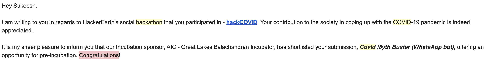

on
Looking back; two years after graduation
Follow @sukeesh Follow @sukeeshbabuIt’s been more than 2 years since I graduated and started working as a Software Engineer at Mercari. So, I thought of putting down everything I did in the past 2 years after I moved to Tokyo, Japan in September 2018.
My Journey so far has been good at Mercari.

The first month was mostly orientation and at the end of October, I joined the US@Tokyo team as a Backend Engineer.
Initial days
In the first quarter, I worked on Home API (Golang) in the Backend team. Integrating ML services to the backend. Setting up Prometheus and Grafana for ML Services written in Python Flask.
+ Golang
+ Prometheus
+ Grafana
+ Kubernetes
+ Docker
Below are the few of the components I added on the home screen of mercari in my first quarter
This was very rewarding since everything I write was visible on the home screen of the application.
(Personal) Hackathon in Tokyo
 I participated in a hackathon for the first time in Tokyo and the atmosphere was completely different compared to that of India. Here is the link to my submission for the Hackathon.
I participated in a hackathon for the first time in Tokyo and the atmosphere was completely different compared to that of India. Here is the link to my submission for the Hackathon.
Code.. Code.. Code
Later year (2019) in the beginning, I spent time mostly on the Home screen API of the mercari. I worked on adding many many components on Home screen of the application. Here is one of many components I developed. This particular component below gave me experience of working with Search backend.

+ Redis
New microservice 
and then, I finally started working on co-creating a new microservice for saved search. During this first microservice of mine, My learning rate was exponential.
+ Microservices
+ Cloud Spanner
(Personal) Kubernetes
And also this is when I started to deep dive into Kubernetes. I was super enthusiastic about Cloud native applications and I spent most of my free time reading code of the core Kubernetes.

I also started contributing to the Kubernetes open source on GitHub. Here, you can read on how I started contributing to Kubernetes.
+ Istio
Second microservice
In mid-2019, I started working on Price suggestion project which suggests a price range when an user is listing an item on the app.

I designed and developed a new backend microservice (written in Golang) for the Price suggestion Machine Learning model.
We released many many various features around this Price suggestion project and I was the backend engineer initially for all of the projects in this team.
Payments
During this phase, I also worked parallelly with the Payments team briefly for a feature required in Mercari GG.
+ PHP
(Personal) Project, Kubernetes Job Notifier

Monitoring Kubernetes cronjob was little tricky and instantaneous updates are hard. So, I thought of solving this problem. I made use of Kubernetes API and Slack API to create a slack notifier for Kubernetes cronjob failures/success. This project as usual  , gathered few stars and I still keep getting “Thank you” emails from those who are using this tool of mine. Here is the link to repository on GitHub.
, gathered few stars and I still keep getting “Thank you” emails from those who are using this tool of mine. Here is the link to repository on GitHub.
2020
Later in January and February of 2020, I worked on various Backend projects including Mercari Pro seller.
+ BigQuery
Backend -> Machine Learning
In March 2020, I took a decision to move to Machine learning team from Backend team. A complete new vertical and I had literally zero professional experience in Machine learning at this point.
Even after joining ML team, I was still working on Backend only tasks.
So, this is when I decided to gain more theoretical and practical knowledge on ML. I took up the specialization on deeplearning.ai. I worked hard for about a month to achieve this.

This gave me so many insights. It was very practical and I completely recommend this to anyone who is interested in starting their career with ML.
My First Machine learning model 
Soon after this, I started working on developing a new Machine learning model for price suggestion. I took up the challenge and was able to train, develop and deploy onto Production in about 1.5 months.
+ Polyaxon
+ Many many ML frameworks
(Personal) Finalist in a Hackathon
Again, time for some personal.
This time I participated in a Hackathon instead of working on a personal project. Generally, whenever I participate in a Hackathon, winning projects are mostly related to Machine Learning.
So, at this point of time since I knew ML and had practical knowledge. I thought of applying ML for the Hackathon project and Surprisingly, I was a finalist and was offered an opportunity for pre-incubation by an Indian Venture Capital firm.

The idea was simple. I developed a WhatsApp bot which fact checks messages related to the Coronavirus.
Image Recognition
Working with Images has taught me a lot of patience. This is already a running model. My role is more like maintaining the project.
This project is the most interesting because I knew nothing before starting!!
+ Kubeflow
These are only few of many projects which I worked on in the past two years. I learnt so many things as a Software engineer. I always tried to take over tasks which are hard/completely unknown to me because later when I look back, I always learnt many things by doing so.
Anything which aint hard, isnt worth doing it.